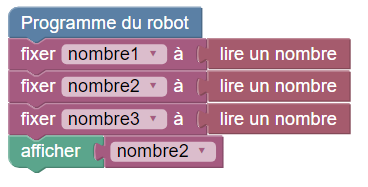
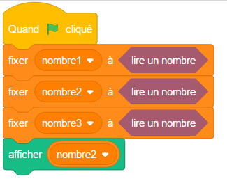

Choisissez votre langage de programmation :
Le but de cet exercice est de lire 3 nombres en entrée, et d'afficher sur la sortie le minimum de ces 3 nombres.
Il n'y a pas d'autres limites.
Trois nombres seront données en entrée, un par ligne, comme l'exemple suivant :
72 10 25
Le programme doit afficher sur sa sortie le nombre le plus petit, comme ceci :
10
Pour vous aider, voici un exemple de programme qui lit les trois nombres et affiche le deuxième :
 